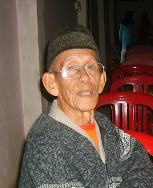

Narasumber Kayat Sudarsa (buyut Wongsomenggolo).
Pada awal perang Dipanegara kira-kira Th 1825 M di Desa Rakit Kabupaten Banjarnegara ada seorang lelaki bernama Daliman. Ia memaksa bergabung dengan grup Tentara P. Dipanegara yang pada waktu itu oleh Pemerintah Hindia Belanda dijuluki grup Brandal yang selalu melawan Pemerintahan Belanda. Oleh keluarga Daliman tidak diizinkan bergabung dengan tentara Pangeran Diponegara tetpi dia memaksa bergabung dan selalu mengikuti perintah-perintah (komando) Prajurit Pangeran Dipanegara, juatru karena itu oleh keluarganya dijuluki lagi, yang semula Daliman ditambah nama “Berod”. IstilahBerod diartikan memaksa. Jadi namanya “Daliman Al Berod” Sepanjang tahun itu ia juga ikut berperang di Kecamatan Sigaluh, melawan penjajah Belanda bersama-sama Tentara Pangeran Dipanegara. Lama kelamaan terdengar desas desus bahwa Pangeran Dipanegara tertangkap oleh tentara Belanda di Magelang, maka pada waktu itu Tentara Pangerang Dipanegara mengalami pemberontakan, kocar kacir seolah-olah mencari keselamatan sendiri-sendiri. Bagi “Daliman Al Berod” juga mencari cara hidup sendiri agar tidak dicurigai oleh penjajah.Dia bersembunyi di lereng hutan “Si Rembe”(Dempes). Setelah situasi dan kondisi pemerintahan dengan keadaan tenang dan kondusif, maka bagi “Daliman Al Berod” secara perlahan-lahan turun dari persembunyian mencoba mencari lokasi yang cocok untuk berdomisili, kemudian menemuikan tempat yang bagi “Daliman Al Berod” yaitu di desa Kemiriombo yang sekarang wilayah RT 15/II desa Kemiriombo tepatnya dan atau di pekarangan swargi Bapak Brigjen R Heru Gunadi. Untuk mengelabuhi penjajahan Belanda dia “Daliman Al Berod”menanggalkan nama itu kemuadian burglar “Wongsomenggolo” dan telah menikah serta terus berdomisili di RT 15/II Kemiriombo sekarang. Sejak berdomisili di situ dia mendapat kepercayaan masyarakat sehingga bisa menggantikan kedudukan Kades yang terdahulu yang daerah kerjanya dari sebelah timur pasar Kaliwiro Kali pakel s/d jembatan besi berbatasan dengan desa Sukoreno ke utara dengan hutan Negara Si Tukup. Setelah beliau wafat jabatan Kades dilimpahkan kepada putranya yang ke-7 yang bernama P.Partodjojo(Partojoyo) dan dibantu seorang carik desa bernama Suwarno Kartosentono. Paska Partodjojo masyarakat keadaannya telah mengalami kemajuan, maka jabatan Kades tidak dilimpahkan kepada putranya, tetapi dengan cara pilihan, dengan sistim thongkrongandimenangkan(dipercayakan) kepada mantan carik desa yang bernamaSuwarno Kartosentono. Sejak itu Suwarno Kartosentono menjabat Kades Tahun 1910 s/d Tahun 1927. Di Tahun 1927 pemerintah mengadakan perobahan struktur pemerintahan desa, yang semula desa setingkat Kemiriombo yang dulu (3 Desa) digabung menjadi 1 yaitu desa Kemiriombo 2 bagian dari desa Kaliwiro 3 desa Tanjungsari dikumpulkan menjadi satu desa Kemiriombo sekarang, kemudian yang mencalonkan menjadi mkades 2 orang kandidat yaitu Kartosentono mantan Kades Kemiriombo dan 2 Ali Sastromidjojo.Pada Pemilihan itu dimenangkan oleh kandidiat nomor 1 Suwarno Kartosentono adarinmtahun 1927 s/d tahun 1941(jaman Penjajahan Jepang). Jadi Kepala Desa Kemiriombo mutlak (yang sekarang) ini adalah Bapak Suwarno Kartosentono berakhir pada tahun 1941 digantikan oleh Bapak Sumardjo Sindu Widjojo(sumarjo Sinduwijoyo) s/d tahun 1965 dan seterusnya. Kini Tahun 2010 Desa Kemiriombo (desa yang memiliki satasiun Radio Komunitas Manggala FM) dipipmpin oleh Bapak Pratikno. Sementara kades sebelumnya dijabat putra asli Kemiriombo Bapak Ahmad Sudarman.